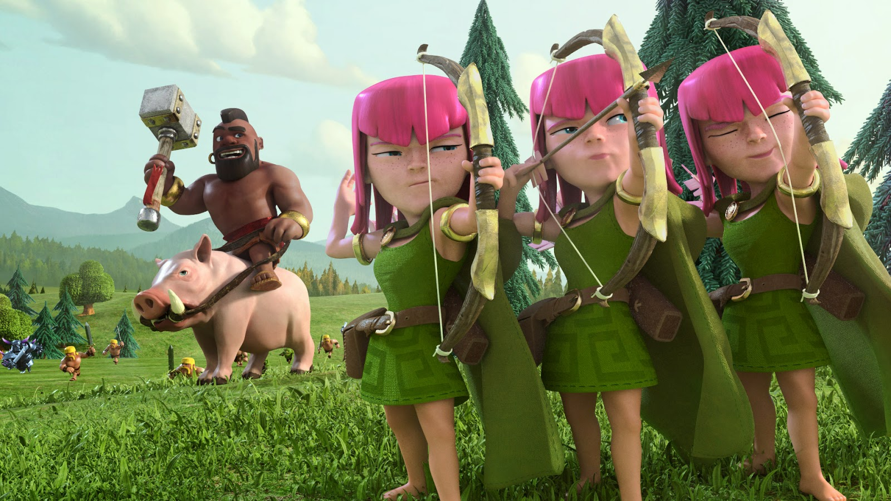

“Clash of Clans is thus a simple game, but that’s more of a strength than a weakness. It’s simple enough to provide quick, painless matches on an iPhone in an idle moment, and there are enough different units to choose from in the battle mode to make playing against other players endlessly rewarding. Best of all, the option to fight against NPC goblins gives Clash of Clans a small edge over similar strategy games that rely almost entirely on player-versus-player combat.”

“Clash of Clans is a superb game, freemium or otherwise, with more nuance than most give it credit for. That's why it's passed the test of time since its launch and still has an active community devotedly constructing elaborate fortresses in the hope of becoming invincible.

“It's not hard to imagine that this could have, in a different context, been released as a sequel, and I'm sure the question was asked at Supercell headquarters. I like the way that it broadens the game without leaving it.”